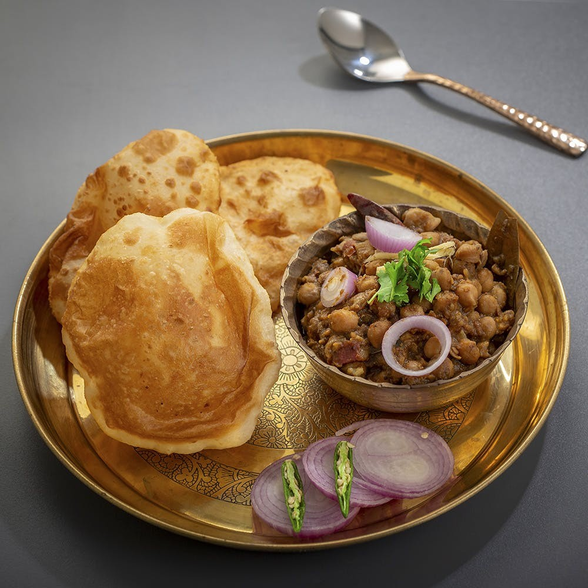

It is a combination of chana masala (spicy white chickpeas) and bhatura/puri, a deep-fried bread made from maida. Although it is known as a typical Punjabi dish, It is originally a culinary dish of Delhi and Uttar Pradesh. Chhole.
Chole Bhature
instructions
step 1
Soak chickpeas overnight. In a small muslin cloth add black cardamom, peppercorns, cardamom, cloves, bayleaf, dried gooseberry(amla) and make a small bag. In a deep vessel or pressure cooker add the soaked chickpeas, muslin bag, baking soda and 5 cups water. Boil the chickpeas till they are soft & tender. Remove the spice bag and keep the chickpeas aside.
step 2
For the dough take refined flour in a bowl. add salt, curd. Sooji, baking soda, baking powder, sugar and little water. Make a son dough and let it rest for 2 hours.
step 3
In a pan heat oil, add ajwain. Add chopped garb c and ginger. Sauce and then add chopped onions till light brown. Now add turmeric, chilly powder, coriander powder, cumin powder and chilly masala.
step 4
Stir and immediately add fresh tomato puree. Cook this masala till oil oozes out. add salt, kasoori methi power and amchur. To this add the boiled chilly along with water. Now cook till it reduces and thickens up. Cook for 20 mins. Check for seasoning and serve hot.
step 5
Heat up oil in a deep vessel. Apply oil on your hands and pull out a small ball of the dough. Shape it round and then place it on to the kitchen counter. Roll out oblong or round and deep fry them in hot oil. Cook on both sides. Remove and serve hot with choley.
ingredients
Chickpeas(soaked) – 1½ cup
Black cardamom – 1 no
Peppercorns – 6-7 no
Cardamom – 3 no
Cinnamon – 1 stick
Cloves – 4 no
Bay Leaf – 1 no
Dried Gooseberry (Amla) – 4 wedges
Baking soda – ½tsp
Salt – to taste
Water – 3 cups
Muslin cloth – a small piece
Bhature
Maida – 2 cups
Semolina(sooji) – 2 tbsp
Salt – a generous pinch
Baking soda – 1/4 tsp
Baking powder – 1/4 tsp
Sugar – 2 tsp
Curd – 2 tbsp
Water – as required
Masala
Oil – 5 tbsp
Carom – 1 tsp
Garlic chopped – ½tbsp
Ginger chopped – ½tbsp
Onion chopped – 1 cup
Turmeric – ½tsp
Chilly powder – 1 tsp
Coriander powder – 1 tbsp
Cumin powder – ½tbsp
Chole masala – 1 tbsp
Tomato puree (fresh) – 1cup
Salt – to taste
Fenugreek leaves powder – 1/4 tsp
Dry mango powder – ½tbsp